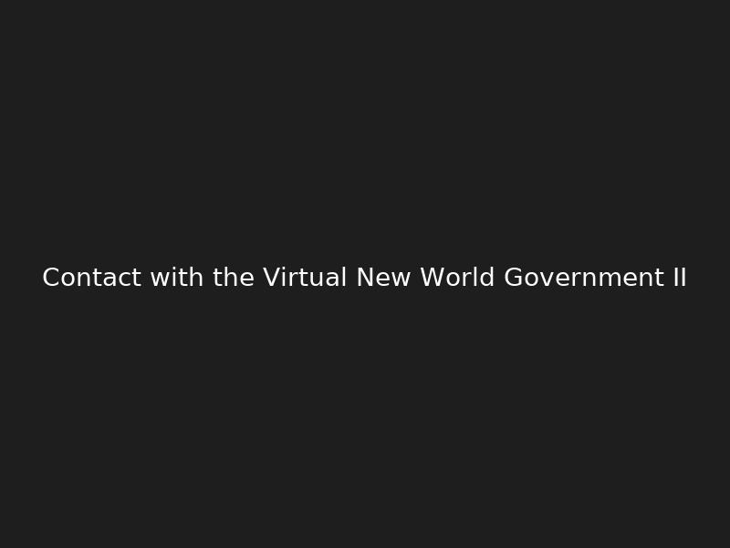
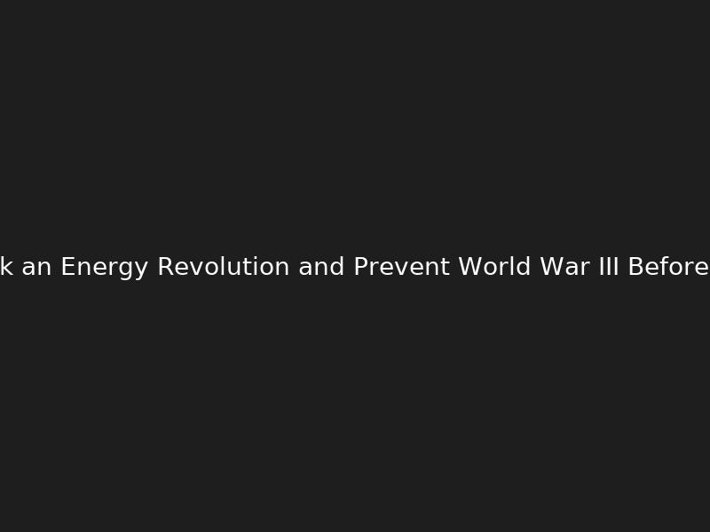
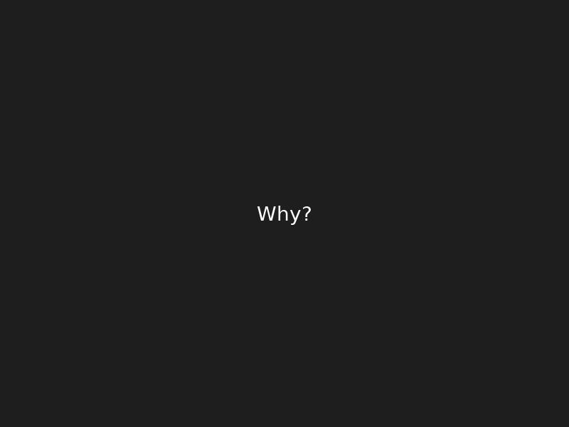
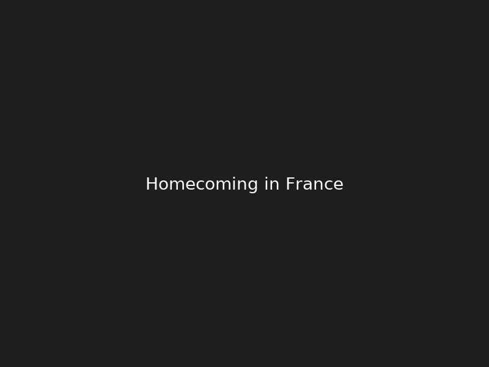
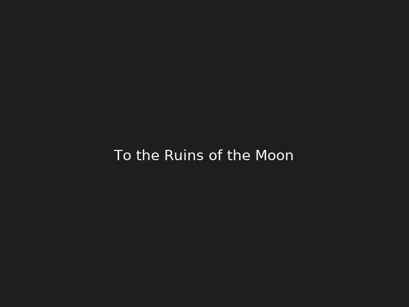

Featured Work
At the Sea of Tranquility (2025)





About
I am an artist exploring the fragile boundary between virtuality and reality through AI-generated imagery and digital editing. My works are created in 2025 and reflect both technological innovation and human questions.
Official Links
Contact
Email: yourname@example.com
Twitter (X): @yourhandle